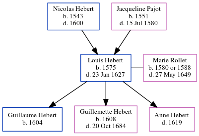

Louis Hebert 1575 - 1627
[ Home ] | [ Calendar ] | [ Surnames Index ] | [ Census Index ] | [ Family History ]The child of Nicolas Hebert and Jacqueline Pajot, Louis Hebert, the 11 times great-grandfather of Michele Copp (née Phillips), was born in Paris, Ile-de-France, France in 15751 and married Marie Rollet (with whom he had 3 children: Guillaume, Guillemette and Anne) in Fr in 16021.
He died on Jan 23, 1627 in Québec, , Quebec, Canada.
Parents
- Nicolas was born in 1543
- Jacqueline was born in 1551
Children
- Guillaume was born in 1604
- Guillemette was born in 1608
Citations
- U.S. and International Marriage Records, 1560-1900 Online publication - Provo, UT, USA: The Generations Network, Inc., 2004.Original data - This unique collection of records was extracted from a variety of sources including family group sheets and electronic databases. Originally, the information was deriv
Family Tree
Generated by ged2site. Last updated on Jun 11, 2024